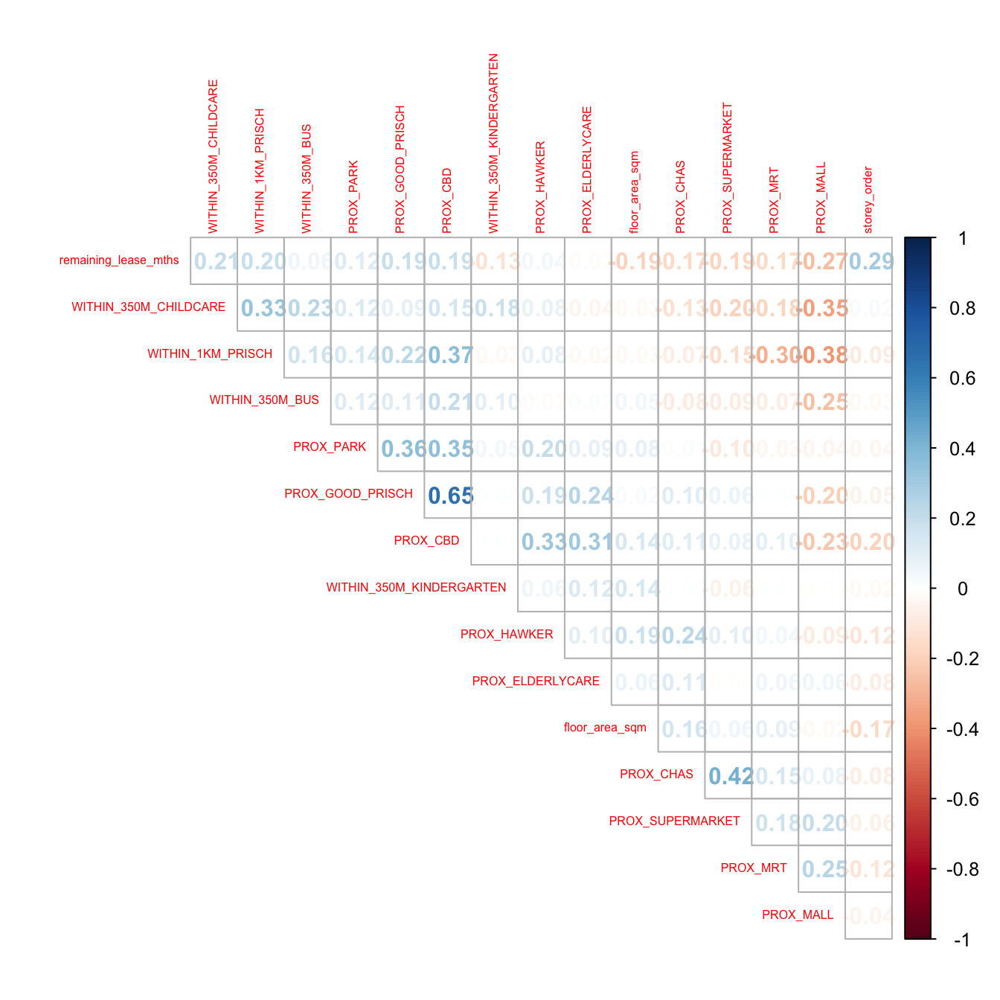
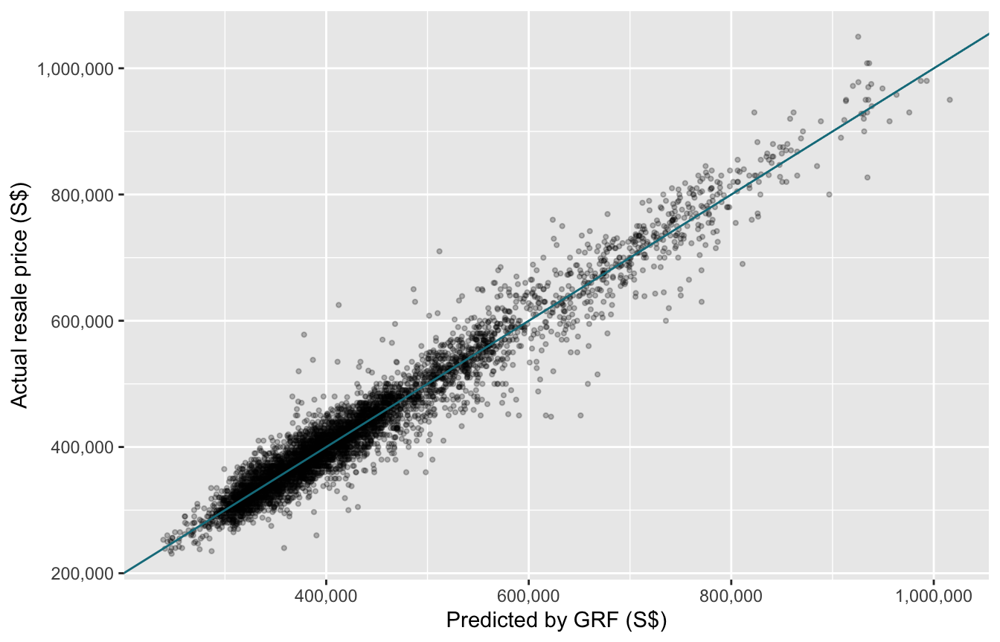

pacman::p_load(sf, spdep, GWmodel, SpatialML, ranger,
tmap, rsample, Metrics, corrplot, tidyverse)Geographically Weighted Predictive Models
HANDS-ON EXERCISE 8
R GWmodel SpatialML ranger Random forest Geographical random forest Spatial cross-validation
This exercise follows Geographically Weighted Predictive Models, the reading for the Geographically Weighted Predictive Modelling block of the course.
1. Overview
Exercise 7 used geographically weighted regression to explain condo prices: which drivers matter, and where. This exercise turns the same idea towards prediction: given a flat’s attributes and location, how accurately can its resale price be estimated, and does letting the model vary over space help?
Four models are compared on HDB resale flats:
- ordinary multiple linear regression, which assumes one set of coefficients everywhere;
- geographically weighted regression (GWR), which lets those coefficients vary;
- a random forest, which drops the linear form but still fits one model for the whole island;
- a geographically weighted random forest (GRF), which fits a small random forest around every location.
The handout fits all four and reports the test error of only the last. Section 10 fills in the comparison, and section 11 asks whether the test error means what it appears to mean.
2. The Data
The handout supplies one prepared file, mdata.rds, built from HDB resale transactions (Data.gov.sg) joined to locational factors: distance to the CBD, MRT, parks, malls, hawker centres, eldercare, CHAS clinics, supermarkets and good primary schools, and counts of kindergartens, childcare centres, bus stops and primary schools nearby. The raw sources are listed in the handout but not distributed, so I work from the prepared file. I checked my copy against three independent course repositories; all three are byte-identical.
3. Getting Started
The handout calls corrplot::corrplot() and ranger() without loading either. ranger happens to be attached by SpatialML; I load both explicitly so the page does not depend on that.
A note on how this page is computed
Several steps take a long time on 10,000 points: the GWR bandwidth search took 16 minutes here, and the geographically weighted random forest considerably longer. Like the handout, I fit each of them once and save the result as an .rds file. Those chunks are shown with eval: false, and the page reads the saved objects. All of them run from one script, R/fit_models.R, which skips any step whose output already exists.
4. Preparing the Data
4.1 Reading the data
mdata <- read_rds("data/rawdata/mdata.rds")
dim(mdata)[1] 15901 18st_crs(mdata)$epsg[1] 341415,901 transactions with 17 attributes, already projected to SVY21 (EPSG:3414).
summary(mdata$resale_price) Min. 1st Qu. Median Mean 3rd Qu. Max.
218000 353000 405000 433588 470000 1186888 4.2 Training and test sets
set.seed(1234)
resale_split <- initial_split(mdata, prop = 6.5/10,)
train_data <- training(resale_split)
test_data <- testing(resale_split)
write_rds(train_data, "data/model/train_data.rds")
write_rds(test_data, "data/model/test_data.rds")train_data <- read_rds("data/model/train_data.rds")
test_data <- read_rds("data/model/test_data.rds")
c(train = nrow(train_data), test = nrow(test_data))train test
10335 5566 A 65/35 random split: 10,335 flats to calibrate on and 5,566 to test against. The split is random over flats. Section 11 shows why that matters.
5. Correlation Matrix
mdata_nogeo <- mdata %>% st_drop_geometry()
corrplot::corrplot(cor(mdata_nogeo[, 2:17]),
diag = FALSE,
order = "AOE",
tl.pos = "td",
tl.cex = 0.5,
method = "number",
type = "upper")
No pair of predictors is correlated above 0.8, so there is no case for dropping any of them. As Exercise 7 showed, that global check says nothing about collinearity inside a GWR neighbourhood, but for prediction rather than interpretation it matters less: a collinear local model can still predict well even when its individual coefficients cannot be trusted.
6. Multiple Linear Regression
price_mlr <- lm(resale_price ~ floor_area_sqm +
storey_order + remaining_lease_mths +
PROX_CBD + PROX_ELDERLYCARE + PROX_HAWKER +
PROX_MRT + PROX_PARK + PROX_MALL +
PROX_SUPERMARKET + WITHIN_350M_KINDERGARTEN +
WITHIN_350M_CHILDCARE + WITHIN_350M_BUS +
WITHIN_1KM_PRISCH,
data = train_data)
write_rds(price_mlr, "data/model/price_mlr.rds")price_mlr <- read_rds("data/model/price_mlr.rds")
summary(price_mlr)
Call:
lm(formula = f, data = train_data)
Residuals:
Min 1Q Median 3Q Max
-205193 -39120 -1930 36545 472355
Coefficients:
Estimate Std. Error t value Pr(>|t|)
(Intercept) 107601.073 10601.261 10.150 < 2e-16 ***
floor_area_sqm 2780.698 90.579 30.699 < 2e-16 ***
storey_order 14299.298 339.115 42.167 < 2e-16 ***
remaining_lease_mths 344.490 4.592 75.027 < 2e-16 ***
PROX_CBD -16930.196 201.254 -84.124 < 2e-16 ***
PROX_ELDERLYCARE -14441.025 994.867 -14.516 < 2e-16 ***
PROX_HAWKER -19265.648 1273.597 -15.127 < 2e-16 ***
PROX_MRT -32564.272 1744.232 -18.670 < 2e-16 ***
PROX_PARK -5712.625 1483.885 -3.850 0.000119 ***
PROX_MALL -14717.388 2007.818 -7.330 2.47e-13 ***
PROX_SUPERMARKET -26881.938 4189.624 -6.416 1.46e-10 ***
WITHIN_350M_KINDERGARTEN 8520.472 632.812 13.464 < 2e-16 ***
WITHIN_350M_CHILDCARE -4510.650 354.015 -12.741 < 2e-16 ***
WITHIN_350M_BUS 813.493 222.574 3.655 0.000259 ***
WITHIN_1KM_PRISCH -8010.834 491.512 -16.298 < 2e-16 ***
---
Signif. codes: 0 '***' 0.001 '**' 0.01 '*' 0.05 '.' 0.1 ' ' 1
Residual standard error: 61650 on 10320 degrees of freedom
Multiple R-squared: 0.7373, Adjusted R-squared: 0.737
F-statistic: 2069 on 14 and 10320 DF, p-value: < 2.2e-16The linear model explains 74% of the variance in resale price on the training data. Every predictor is significant. The signs mostly read sensibly: price falls with distance from the CBD and from the MRT, and rises with floor area, storey and remaining lease, about S$345 for every extra month of lease.
7. Geographically Weighted Regression
7.1 Adaptive bandwidth
bw_adaptive <- bw.gwr(
formula = resale_price ~ floor_area_sqm +
storey_order + remaining_lease_mths +
PROX_CBD + PROX_ELDERLYCARE + PROX_HAWKER +
PROX_MRT + PROX_PARK + PROX_MALL +
PROX_SUPERMARKET + WITHIN_350M_KINDERGARTEN +
WITHIN_350M_CHILDCARE + WITHIN_350M_BUS +
WITHIN_1KM_PRISCH,
data = train_data,
approach = "CV",
kernel = "gaussian",
adaptive = TRUE,
longlat = FALSE)
write_rds(bw_adaptive, "data/model/bw_adaptive.rds")bw_adaptive <- read_rds("data/model/bw_adaptive.rds")
bw_adaptive[1] 40Cross-validation selects 40 nearest neighbours, the same as the handout.
7.2 Calibrating the GWR model
gwr_adaptive <- gwr.basic(
formula = resale_price ~ floor_area_sqm +
storey_order + remaining_lease_mths +
PROX_CBD + PROX_ELDERLYCARE +
PROX_HAWKER + PROX_MRT + PROX_PARK +
PROX_MALL + PROX_SUPERMARKET +
WITHIN_350M_KINDERGARTEN +
WITHIN_350M_CHILDCARE +
WITHIN_350M_BUS + WITHIN_1KM_PRISCH,
data = train_data,
bw = bw_adaptive,
kernel = "gaussian",
adaptive = TRUE,
longlat = FALSE)
write_rds(gwr_adaptive, "data/model/gwr_adaptive.rds")gwr_adaptive <- read_rds("data/model/gwr_adaptive.rds")
gwr_adaptive$GW.diagnostic[c("AICc", "gw.R2", "gwR2.adj", "enp")] %>% unlist() %>% round(4) AICc gw.R2 gwR2.adj enp
238872.0406 0.9677 0.9612 1730.1006 I print the diagnostics rather than the whole object, which runs to several screens of coefficient summaries. GWR raises R² on the training data from 0.74 to 0.97 and lowers AICc by about 18,000, at the cost of roughly 1,730 effective parameters. That is the in-sample picture. Whether the extra flexibility carries over to flats the model has not seen is the question of section 10.
7.3 Predicting the test set
The handout predicts with gwr.predict():
gwr_pred <- gwr.predict(
formula = resale_price ~ floor_area_sqm +
storey_order + remaining_lease_mths +
PROX_CBD + PROX_ELDERLYCARE + PROX_HAWKER +
PROX_MRT + PROX_PARK + PROX_MALL +
PROX_SUPERMARKET + WITHIN_350M_KINDERGARTEN +
WITHIN_350M_CHILDCARE + WITHIN_350M_BUS +
WITHIN_1KM_PRISCH,
data = train_data,
predictdata = test_data,
bw = 40,
kernel = "gaussian",
adaptive = TRUE,
longlat = FALSE)
Important
gwr.predict() does not work at this size in GWmodel 2.4.1
It fails. Run as written, the call stops with No regression point is fixed. The cause is a bug in the package. When the training set has more than 5,000 points, gwr.predict() stops precomputing distances and calls gw.dist(fd.locat, focus = i, p, theta, longlat) inside a loop. Those arguments are positional, so p (the Minkowski power, 2) lands in the rp.locat slot and the function finds one “regression point” where it asked for point i. With 10,335 training flats the broken branch is always taken. The handout’s version of GWmodel evidently did not have this problem.
The obvious workaround is impractical. Passing both distance matrices (dMat1, dMat2) skips the broken branch. But the function then goes on to compute a prediction variance, which needs t(I - S) %*% (I - S) for a 10,335 by 10,335 hat matrix S: several dense matrices of about 850 MB each and roughly a trillion floating-point operations. On this machine it ran for over an hour without finishing.
What I do instead. A GWR prediction is the local coefficients at the test location, calibrated on the training flats, multiplied by the test flat’s attributes. gwr.basic() with regression.points returns exactly those coefficients and skips the variance, so the whole step takes about 30 seconds:
gwr_at_test <- gwr.basic(
formula = resale_price ~ floor_area_sqm +
storey_order + remaining_lease_mths +
PROX_CBD + PROX_ELDERLYCARE + PROX_HAWKER +
PROX_MRT + PROX_PARK + PROX_MALL +
PROX_SUPERMARKET + WITHIN_350M_KINDERGARTEN +
WITHIN_350M_CHILDCARE + WITHIN_350M_BUS +
WITHIN_1KM_PRISCH,
data = train_data,
regression.points = test_data,
bw = 40,
kernel = "gaussian",
adaptive = TRUE,
longlat = FALSE)
B <- as.matrix(st_drop_geometry(st_as_sf(gwr_at_test$SDF))[, 1:15])
X <- cbind(1, as.matrix(st_drop_geometry(test_data)[, all.vars(formula(price_mlr))[-1]]))
gwr_pred <- tibble(prediction = rowSums(B * X))
write_rds(gwr_pred, "data/model/gwr_pred.rds")To be sure this is the same model and not a near relative, R/check_gwr_predict.R runs both on a subset small enough for gwr.predict() to finish (3,000 training flats, 400 test flats):
read_rds("data/model/gwr_predict_check.rds")# A tibble: 1 x 4
n_train n_test max_abs_diff correlation
<int> <int> <dbl> <dbl>
1 3000 400 0 1The two sets of predictions are identical. The only thing given up is the prediction variance, which the handout does not use.
The handout also computes a separate adaptive bandwidth on the test data and saves it, then predicts with a hard-coded bw = 40. That bandwidth is never used, and it should not be: choosing a bandwidth on the test set would let the test data shape the model it is meant to judge. I leave it out.
8. Random Forest
8.1 Coordinates and geometry
coords_train <- st_coordinates(train_data)
coords_test <- st_coordinates(test_data)
train_data_nogeom <- train_data %>% st_drop_geometry()
test_data_nogeom <- test_data %>% st_drop_geometry()8.2 A non-spatial random forest
set.seed(1234)
rf <- ranger(
formula = resale_price ~ floor_area_sqm +
storey_order + remaining_lease_mths +
PROX_CBD + PROX_ELDERLYCARE +
PROX_HAWKER + PROX_MRT + PROX_PARK +
PROX_MALL + PROX_SUPERMARKET +
WITHIN_350M_KINDERGARTEN +
WITHIN_350M_CHILDCARE +
WITHIN_350M_BUS +
WITHIN_1KM_PRISCH,
data = train_data_nogeom)
write_rds(rf, "data/model/rf.rds")rf <- read_rds("data/model/rf.rds")
rfRanger result
Call:
ranger(f, data = train_nogeom)
Type: Regression
Number of trees: 500
Sample size: 10335
Number of independent variables: 14
Mtry: 3
Target node size: 5
Variable importance mode: none
Splitrule: variance
OOB prediction error (MSE): 731404460
R squared (OOB): 0.9493789 The out-of-bag R² is 0.9494, against the handout’s 0.9496; the trees are random, and the handout’s ranger version draws them slightly differently. Out-of-bag error is the random forest’s built-in estimate of test error: each tree is scored on the flats it did not sample. Its square root, about S$27,000, is a figure to keep in mind for section 10.
9. Geographically Weighted Random Forest
9.1 Calibrating
set.seed(1234)
gwRF_adaptive <- grf(
formula = resale_price ~ floor_area_sqm +
storey_order + remaining_lease_mths +
PROX_CBD + PROX_ELDERLYCARE +
PROX_HAWKER + PROX_MRT + PROX_PARK +
PROX_MALL + PROX_SUPERMARKET +
WITHIN_350M_KINDERGARTEN +
WITHIN_350M_CHILDCARE +
WITHIN_350M_BUS + WITHIN_1KM_PRISCH,
dframe = train_data_nogeom,
bw = 40,
kernel = "adaptive",
coords = coords_train)
write_rds(gwRF_adaptive, "data/model/gwRF_adaptive.rds")grf() fits one global random forest and then, for every training flat, a local forest on its 40 nearest neighbours. That is 10,335 small forests, which is why this step is slow.
9.2 Predicting the test set
gwRF_adaptive <- read_rds("data/model/gwRF_adaptive.rds")
test_data_nogeom <- cbind(test_data, coords_test) %>%
st_drop_geometry()
gwRF_pred <- predict(gwRF_adaptive,
test_data_nogeom,
x.var.name = "X",
y.var.name = "Y",
local.w = 1,
global.w = 0)
write_rds(gwRF_pred, "data/model/GRF_pred.rds")The handout calls predict.grf() directly. SpatialML 1.8.2 no longer exports it; it is now an S3 method for the grf class, so the generic predict() reaches the same function.
local.w = 1, global.w = 0 means each test flat is predicted entirely by the local forest of its nearest training location, with no weight on the global forest.
GRF_pred <- read_rds("data/model/GRF_pred.rds")
test_data_p <- cbind(test_data, GRF_pred = GRF_pred) %>%
select(resale_price, GRF_pred)
rmse(test_data_p$resale_price, test_data_p$GRF_pred)[1] 28180.12ggplot(test_data_p, aes(x = GRF_pred, y = resale_price)) +
geom_point(alpha = 0.25, size = 0.8) +
geom_abline(slope = 1, intercept = 0, colour = "#137C8B") +
scale_x_continuous(labels = scales::label_comma()) +
scale_y_continuous(labels = scales::label_comma()) +
labs(x = "Predicted by GRF (S$)", y = "Actual resale price (S$)")
My GRF test RMSE is S$28,180, within S$20 of the handout’s S$28,161. The small gap is expected: grf() grows thousands of random trees, and its internal random-number use differs slightly across package versions. The scatterplot sits tightly on the diagonal for most flats and fans out above about S$500,000, where transactions are sparse and each local forest has few comparable sales to learn from.
10. Comparing All Four Models on the Same Test Set
The handout reports the GRF’s test error and stops. A test error means little alone; the question a predictive modelling exercise has to answer is which model to use.
gwr_pred <- read_rds("data/model/gwr_pred.rds")
preds <- tibble(
actual = test_data$resale_price,
MLR = predict(price_mlr, test_data),
GWR = gwr_pred$prediction,
`Random forest` = predict(rf, test_data_nogeom)$predictions,
GRF = GRF_pred)
comparison <- preds %>%
pivot_longer(-actual, names_to = "model", values_to = "pred") %>%
group_by(model) %>%
summarise(RMSE = rmse(actual, pred),
MAE = mae(actual, pred),
MAPE_pct = 100 * mape(actual, pred)) %>%
arrange(RMSE) %>%
mutate(across(c(RMSE, MAE), round), MAPE_pct = round(MAPE_pct, 2))
comparison# A tibble: 4 x 4
model RMSE MAE MAPE_pct
<chr> <dbl> <dbl> <dbl>
1 GWR 24800 17924 4.2
2 Random forest 26547 18862 4.41
3 GRF 28180 19986 4.68
4 MLR 60998 47025 10.8
NoteOn this split, plain GWR is the best model and the GRF is the weakest of the three spatial ones
GWR wins on every measure: RMSE S$24,800, MAE S$17,900, 4.2% mean absolute percentage error. The plain random forest comes second (S$26,500), and the geographically weighted random forest third (S$28,200). Linear regression is far behind at S$61,000, more than twice the error of any other model.
The GRF is not an improvement on a plain random forest here. It is the model the handout builds towards, and on this test set it is worse than the simpler forest it extends. Two settings explain most of it. Each local forest is trained on only 40 flats, and local.w = 1 throws away the global forest entirely. A forest grown on 40 observations is a weak learner, and a weighted mix of local and global (for example local.w = 0.5) is the usual remedy in the GRF literature.
GWR wins in every price band, not just on average:
| bottom half | 50th to 90th percentile | top 10% | |
|---|---|---|---|
| GWR | 20,091 | 25,499 | 39,194 |
| Random forest | 21,135 | 25,832 | 46,380 |
| GRF | 22,616 | 29,277 | 44,289 |
| MLR | 49,119 | 57,823 | 108,638 |
RMSE in S$ by actual price band, computed from the same predictions.
So “machine learning beats regression” is not the lesson. “Letting the model vary over space beats not letting it” is, and the linear form, once it is local, is competitive with the forest.
11. What the Random Split Hides
11.1 Most test flats have a twin in the training set
HDB flats come in blocks. A block has dozens of flats at one address, and mdata gives every flat in a block the same coordinates and the same locational attributes. A random split over flats therefore sends some of a block’s flats to training and others to test.
H <- read_rds("data/model/holdout.rds")
H$leak# A tibble: 1 x 3
same_location within_100m n_cells
<dbl> <dbl> <int>
1 0.819 0.970 8682% of test flats have a training flat at exactly the same coordinates, and 97% have one within 100 m. For those flats, predicting the price is close to looking it up: a flexible model only has to recognise the block and read off what similar flats in it sold for. That is a legitimate task, valuing a flat in a block that has recent sales, but it is not the same as predicting a price where the model has no local evidence.
11.2 A spatially blocked holdout
To separate the two, R/spatial_holdout.R divides Singapore into 2 km grid cells and sends whole cells to the test set, so no test flat has a training flat in its own neighbourhood. It repeats this for five random draws of held-out cells, for the three models that are fast enough to refit: linear regression, the random forest, and GWR (keeping the 40-neighbour bandwidth from section 7).
H$blocked %>% mutate(across(c(median_nn_m, MLR, RF, GWR), round))# A tibble: 5 x 7
draw n_train n_test median_nn_m MLR RF GWR
<int> <int> <int> <dbl> <dbl> <dbl> <dbl>
1 1 11089 4812 583 62247 56620 59496
2 2 10265 5636 718 61794 67143 57194
3 3 10409 5492 783 51637 52902 1530245
4 4 10457 5444 658 62994 58065 76962
5 5 9792 6109 521 78956 76978 58410# Medians rather than means across the five draws: one GWR draw fails badly
# (discussed below) and a mean would be that one draw.
blocked_median <- H$blocked %>% summarise(across(c(MLR, RF, GWR), median))
random_rmse <- setNames(comparison$RMSE, comparison$model)
tibble(model = c("MLR", "Random forest", "GWR"),
`random split RMSE` = unname(random_rmse[c("MLR", "Random forest", "GWR")]),
`spatially blocked RMSE (median of 5)` =
round(c(blocked_median$MLR, blocked_median$RF, blocked_median$GWR))) %>%
mutate(ratio = round(`spatially blocked RMSE (median of 5)` / `random split RMSE`, 2))# A tibble: 3 x 4
model `random split RMSE` `spatially blocked RMSE (median of 5)` ratio
<chr> <dbl> <dbl> <dbl>
1 MLR 60998 62247 1.02
2 Random forest 26547 58065 2.19
3 GWR 24800 59496 2.4
ImportantMost of the flexible models’ advantage is the leak
Linear regression barely notices the change. Its error moves from S$61,000 on the random split to a median of S$62,200 on the blocked one. It never relied on knowing the block.
The random forest’s error more than doubles, from S$26,500 to a median of S$58,100, and in two of the five draws it is worse than linear regression. A forest predicting a flat whose block it has seen is close to an expert valuer; predicting a flat in a neighbourhood it has never seen, it is only slightly better than a regression line.
GWR’s error also more than doubles (median S$59,500), and in draw 3 it fails outright: RMSE S$1.5 million. That is not most flats. In that draw, 77 of 5,492 test flats have errors above S$1 million while the median error is an ordinary S$37,700. The worst cases are not far from training data (about 200 m), so this is not simple extrapolation in space. It is the local regression being badly conditioned: when the 40 nearest training flats come from one or two blocks, their locational variables are nearly identical, the local coefficients become enormous and unstable, and a test flat whose values differ even slightly is extrapolated wildly. It is the local collinearity of Exercise 7, showing up as prediction error. A random forest cannot fail this way, because its predictions are averages of observed prices.
What the comparison in section 10 actually measured. On the random split, the three spatial models are being rewarded mostly for recognising blocks they have already seen. That is a legitimate use case (valuing a flat in a block with recent sales) and for that use GWR is the best of the four. For valuing flats where the model has no nearby evidence, a new estate or a block with no recent sales, none of the flexible models is much better than linear regression, and GWR needs guarding against its rare catastrophic predictions. The geographically weighted random forest is not included here because each refit takes about nine minutes; I would expect it to lose its advantage in the same way.
12. What I Take From This Exercise
The handout’s comparison was missing its comparison. It builds four models and reports the test error of one. Scored on the same test set, plain GWR is the most accurate (RMSE S$24,800), ahead of the random forest (S$26,500) and the geographically weighted random forest (S$28,200), with linear regression far behind (S$61,000). The model the exercise builds towards came third of the four.
A random split is the wrong test for spatial prediction. 82% of test flats have a training flat at the same coordinates, because flats in a block share an address. Holding out whole 2 km areas instead roughly doubles the error of every flexible model and leaves linear regression almost unchanged. Which split is right depends on the question: valuing a flat in a block with recent sales, or valuing one where there are none. The handout’s split answers only the first, and does not say so.
GWR’s local flexibility has a failure mode that forests do not. Under the blocked split, one draw produced errors of millions of dollars for a few dozen flats, from ill-conditioned local regressions. A random forest’s prediction is bounded by the prices it has seen; a local linear model’s is not. Anyone deploying GWR for prediction should clip predictions or check local condition numbers first.
Two package changes broke the handout as written, silently or not. gwr.predict() fails for more than 5,000 training points in GWmodel 2.4.1, and its workaround is computationally impractical because of a prediction variance the exercise never uses. predict.grf() is no longer exported by SpatialML 1.8.2. Neither is a statistical problem, but both are the kind of thing that makes a reproducible pipeline stop being reproducible a year later.
Connecting back to Exercise 7. There, local collinearity was a reason not to interpret individual GWR coefficients. Here it turns out to matter for prediction too, but only when the model is asked to predict away from the evidence it was fitted on, which is exactly when a prediction is most useful.
References
- Georganos, S., Grippa, T., Niang Gadiaga, A., Linard, C., Lennert, M., Vanhuysse, S., Mboga, N., Wolff, E. and Kalogirou, S. (2021). Geographical random forests: a spatial extension of the random forest algorithm to address spatial heterogeneity in remote sensing and population modelling. Geocarto International, 36(2), 121-136.
- Roberts, D. R. et al. (2017). Cross-validation strategies for data with temporal, spatial, hierarchical, or phylogenetic structure. Ecography, 40(8), 913-929.
- Kam, T. S. R for Geospatial Data Science and Analytics, chapter 14.